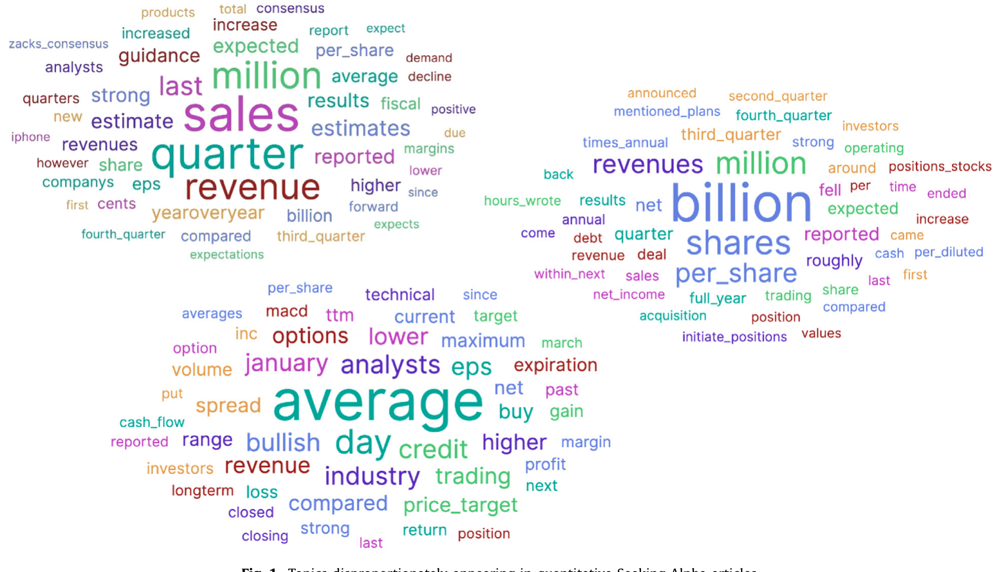
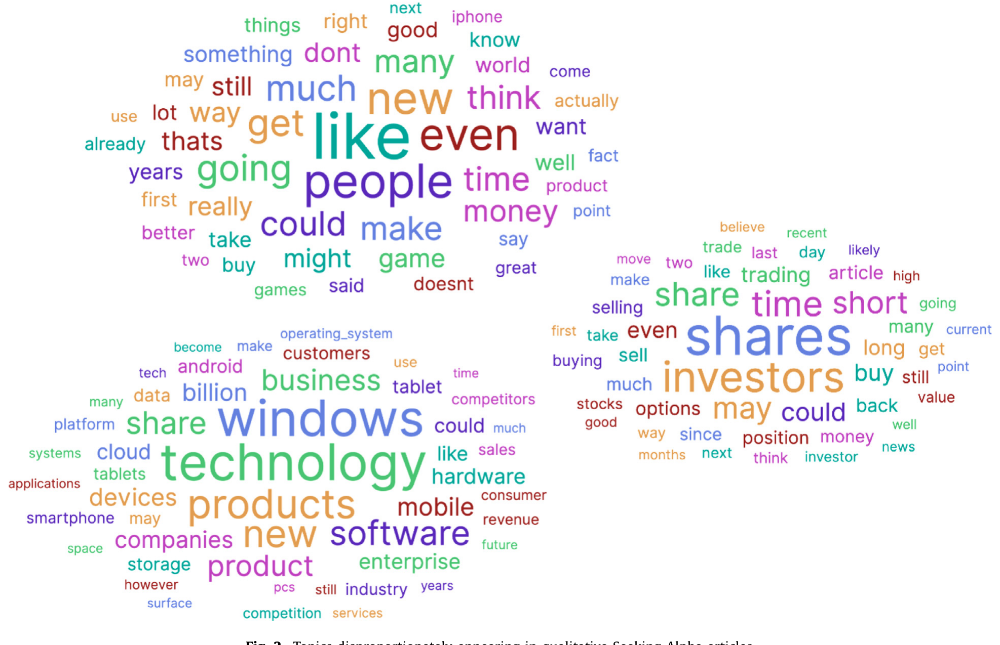
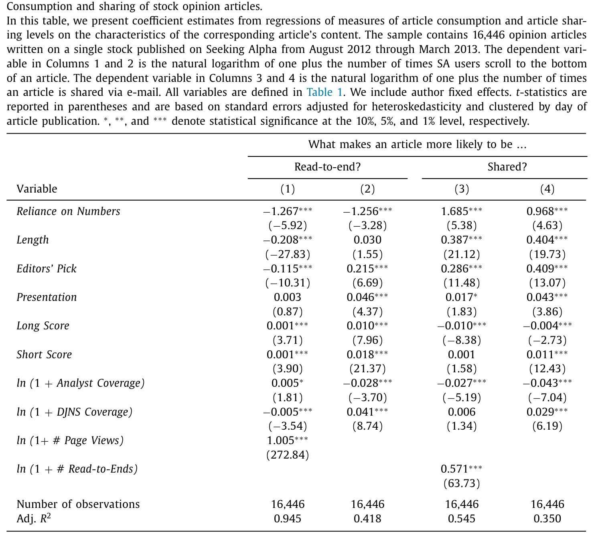
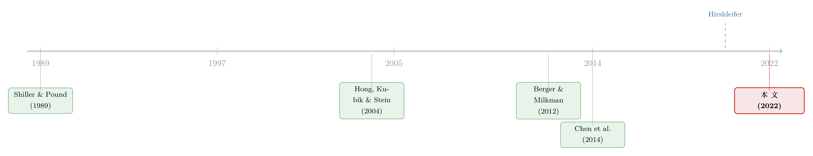

我们读的，和我们转发的，是两回事
本文读的是 Chen & Hwang (2022, Journal of Financial Economics)：投资者在「私下里」更爱读不那么依赖数字的文章，可一旦要把文章转给别人，他们却偏偏挑那些满是数字的「量化」文章——哪怕后者对未来收益的预测更不准。一个看似无害的「转发」动作，竟把不那么有用的内容推成了对话的主角，并最终把某些股票推向了高估。
1 一个被忽略的裂缝
我们都知道，人们的投资想法，很大一部分不是自己憋出来的，而是从别人那里「听」来的——同事、邻居、网上的陌生人（Shiller and Pound, 1989；Hong et al., 2004）。于是一个朴素的乐观判断顺理成章地出现了：既然信息在社交中流动，那它应该让决策变得更聪明才对。
但事情真有这么简单吗？
信息在口耳相传的过程中会被扭曲，传播者也可能只挑那些「好看」的、不具代表性的内容来分享（Hirshleifer, 2015, 2020）。这一点早有人提过。可本文作者真正想问的，是一个更细、也更扎心的问题：到底是什么，决定了一个人愿意把哪条消息转出去？
我们通常默认，人分享一条投资观点，是因为他觉得「这条有用」。可如果——只是如果——人们在挑选要分享什么的时候，心里盘算的并不主要是「这条内容值不值钱」，而是「我把它转出去，别人会怎么看我」呢？
这就是全文的那道裂缝：消费的内容和分享的内容之间，可能存在一条系统性的鸿沟。你私下读的，和你转给朋友的，根本不是同一种东西。
2 一个来自社会心理学的猜想
接着，一个自然的问题是：凭什么这条鸿沟会存在？
作者把答案押在社会心理学里最稳固的一块基石上——印象管理 (impression management，又称 self-presentation，自我呈现)。这套理论说，人在社交时首要考虑的，从来不是信息本身，而是「我这条分享会给别人留下什么印象，这个印象符不符合我想成为的那个人」。人分享是为了显得讨人喜欢 (ingratiation)，也为了显得有能力、有品味 (self-promotion)（Baumeister, 1982；Leary and Kowalski, 1990；Berger and Milkman, 2012）。这甚至可以一路追溯到人类演化：要在群体里活下来，「被喜欢」和「被认为能干」都是硬通货（Lakin and Chartrand, 2003）。
那么，在投资对话里，什么样的内容最适合用来「管理印象」？
作者的押注是：数字。一段裹满数字的观点，往往被认为更深思熟虑、更可信、更显聪明（Kadous et al., 2005；Huang et al., 2018）。新闻学的研究甚至直接指出，记者用数字，主要不是为了它的信息价值，而是为了制造一种权威和可信的「修辞效果」（Roeh and Feldman, 1984；van Dijk, 1988）。而神经科学也来背书：处理数字的能力，确实和推理、解决问题、自我调节这些「智力」的内核正相关（Cragg and Gilmore, 2014）。
于是猜想成型了：如果印象管理重要，而数字又是印象管理的好工具，那我们就该看到——投资者更愿意转发量化内容，哪怕他们私下里更爱读那些不那么依赖数字的文章。
注意这个预言的精妙之处：它不是说「人只爱数字」，而是说消费和分享会出现方向相反的撕裂。这正是它可以被证伪的地方。
3 识别策略：偷听一个网站的服务器日志
但真正关键的一步，是怎么把「读」和「转」分开来量。这是本文最聪明的地方。
作者拿到了美国最大的投资类网站之一 Seeking Alpha (SA) 的服务器日志数据 (server log data)。SA 上任何人都能投稿股票观点文章，由编辑团队筛选发表，作者按页面浏览量拿稿酬。截至 2021 年初，它累计发了近 100 万篇文章、有 17,247 位撰稿人，每月吸引超过 1500 万独立访客——而且这批访客绝非散兵游勇：SA 报告其受众平均家庭收入达 $321,302，65% 的人每月至少交易一次。
服务器日志的妙处在于，它能在文章层面同时记下两件平时观察不到的事：
- 读到底次数 (# Read-to-Ends)——有多少次，读者把文章一路滚到了最底部。这是「消费」的代理。
- 分享次数 (# Shares)——有多少次，文章被人通过电子邮件转发出去（转发时必须输入收件人邮箱，所以这是一种点对点的、熟人之间的分享，而非 Twitter 那种向松散人群的群发）。这是「对话/传播」的代理。
而自变量 (independent variable) 就是核心的 依赖数字程度 (Reliance on Numbers)：文章里数字出现的总次数 ÷ 总词数。把这个比率排到顶端四分之一的，叫「量化」文章；排到底端四分之一的，叫「质化」文章。
量化和质化的文章，在「聊什么」上也判然有别。下面两张词云图很直观：依赖数字的文章扎堆讨论财报与业绩——「quarter」「sales」「billion」「analysts」；而最不依赖数字的，则在谈消费者与投资者情绪——「people」「like」「technology」「investors」。

Figure 1: Topics disproportionately appearing in quantitative Seeking Alpha articles

Figure 2: Topics disproportionately appearing in qualitative Seeking Alpha articles
最终样本是 2012 年 8 月到 2013 年 3 月间、写单只股票的 16,446 篇观点文章。回归设定也很干净。先看消费：
$$ \ln(1 + \text{\# Read-to-Ends}_i) = \alpha_k + \beta\, \text{Reliance on Numbers}_i + X_{i,j}\,\delta + \varepsilon_i $$
再看分享，把被解释变量换成转发：
$$ \ln(1 + \text{\# Shares}_i) = \alpha_k + \beta\, \text{Reliance on Numbers}_i + X_{i,j}\,\delta + \varepsilon_i $$
这里 \(\alpha_k\) 是作者固定效应 (author fixed effects)——这一步至关重要。一个习惯写量化文章的作者，可能在其他方面（文笔、声誉）也系统性地不同；放进作者固定效应，就把「比较」收窄到了同一位作者笔下、量化程度不同的文章之间，从而把作者层面那些看不见的特征扫掉。标准误按文章发表日聚类 (clustered by day)。
4 主要结果：读的归读，转的归转
结果出来，预言应验，而且应得相当漂亮。
先看读。 量化文章被读到底的次数显著更少。在「文章已被点开」的条件下，Reliance on Numbers 每上升一个标准差，读到底的频率下降 5.1%（t = −5.92）；不加这一条件、无条件地看，也下降 5.0%（t = −3.28）。也就是说，私下里，投资者其实更愿意把那些少用数字的文章读完。
再看转。 反转就在这里。同样是量化文章，投资者却热衷于把它转给同伴。在「文章已被读到底」的条件下，Reliance on Numbers 每升一个标准差，转发频率反而上升 6.7%（如表 2 的第 3 列）。这个倾向之强，以至于量化观点最终成了投资者对话里的主角——尽管它们一开始压根没那么多人愿意读。

Table 2
这就是那道裂缝被量出来的样子：同一批人，读的时候避开数字，转的时候奔向数字。 一个有意思的旁证是数据本身的「稀薄」——平均每一次读到底，只伴随 0.003 次邮件分享（5.46 / 2029.77）。这说明绝大多数读到底，并不是被别人转发邮件「拉」来的，而是投资者自己搜来读的。换句话说，「读」基本反映了私下的、不受社交目光注视的偏好——这恰恰让它成了印象管理的干净对照组。
为了排除「这只是网上随手一点、当不得真」的质疑，作者还在 840 位真实投资者（其中相当一部分净可投资资产超过 $300,000）身上做了实验：给所有人同时看一篇量化文章和一篇质化文章，然后对随机选中的一组上调他们的印象管理动机。结果，被「点燃」了印象管理动机的那组，明显更频繁地选择分享那篇量化文章，对质化文章却没有这种变化。设定（field 里观察 + 实验里操纵）一拉一推，故事就立住了。
5 可被转发的，未必是更准的
然后，一个更尖锐的问题来了：被疯狂转发的量化文章，至少更准吧？
并没有。作者去衡量哪类文章更能预测未来收益，发现恰恰是质化 SA 文章预测得更准，而量化文章预测得更不准。
更有意思的是「读」和「转」在这件事上的分道扬镳：一篇文章被读到底越多，它的预测越准——这跟以往「SA 这类平台的用户是有信息、能分辨好坏文章的」结论一致（Chen et al., 2014；Avery et al., 2016；Jame et al., 2016）。可一篇文章被转发越多，它的预测反而越不准。
读者识货，分享却跑偏。这就把第 4 节的裂缝推到了它该有的归宿：消费的内容比分享的内容更有信息含量，而二者之间那道楔子，正是印象管理凿出来的。
6 当分享，悄悄推高了价格
但真正让这篇论文从「有趣的行为现象」上升到「资产定价后果」的，是最后这一步反转。
如果分享出去的内容系统性地更没用，而听众又没有充分意识到这一点；再加上投资者买入比卖空容易得多（Barber and Odean, 2008）——那么，那些在对话里被反复提起的股票，就会被过度买入，从而被推高，随后收益反常地走低。
作者用「病毒股 (viral stocks)」来检验：那些被分享次数畸高的 SA 文章所提及的股票。结果如剧本所写——这些股票初期经历高收益，随后高收益发生反转。而且，这个先涨后跌的模式，在卖空受限 (short-sale constrained) 的股票里明显更强（因为没人能轻易把高估纠正回来）。换到一个长达六年、包含全美上市公司全部推文的样本里，同样的模式再次出现。survey 证据也来补刀：投资者承认会认真对待口耳相传的投资点子、并频繁照着做，而他们最终买入的许多股票，事后跑输。
这里的因果链条是有条件的——它依赖「听众没能给印象管理的扭曲打足折扣」这一行为假设。如果听众足够老练、能反推出「他转给我量化文章只是为了显得聪明」，过度定价就不会发生。本文的资产定价证据，本质上是在说：现实里的听众，并没有打足这个折扣。
7 文献脉络
把这篇论文放回它生长的那条藤上，脉络就清楚了。
最早，是一批关注「投资者从社交中获取信息」的实证工作：Shiller and Pound (1989) 用问卷记录了兴趣与信息在投资者间的扩散，Hong et al. (2004) 则证明社交互动会提高股市参与率。这一支起初带着乐观的底色——社交似乎总是好的。
接着，市场营销与传播学贡献了另一块拼图：到底什么内容会被疯传？Berger and Milkman (2012) 系统地研究了「什么让网络内容病毒式传播」，把「分享动机」本身变成了研究对象。

然后，金融学开始直接挖 SA 这类平台。Chen et al. (2014) 那篇「群体的智慧」表明，社交媒体上传播的股票观点是有价值的、能预测收益的——这给了「社交=更好决策」的乐观叙事一个有力的注脚。
但真正把方向掰过来的，是 Hirshleifer (2020) 的主席演讲，他把「社会传播偏差 (social transmission bias)」正式立为一个研究纲领：传播过程本身会系统性地扭曲信息。本文正坐落在这条线的最新一环——它没有停在「传播会扭曲」的断言上，而是用服务器日志这把手术刀，把扭曲的一个具体机制（印象管理）和它的资产定价后果（病毒股的过度定价）一起钉了下来。
（关于社交平台上「注意力共享、情绪私有」如何在不同维度上塑造价格，可参见《注意力是共同的，情绪是私人的》；而 SA 这类「投资研究众包」如何反过来让散户下单更聪明，则可参见《把研究「众包」给散户之后，他们的下单反而更聪明了》——它和本文恰好是同一枚硬币的两面：识货的是「读」，跑偏的是「转」。）
8 评论与延伸（Q&A + 研究方向）
(a) 几个可能的疑问
Q：这跟「报喜不报忧」的偏差是一回事吗？
不完全是。「报喜不报忧」（Kaustia and Knüpfer, 2012；Heimer and Simon, 2017）说的是人选择性地分享成功、隐瞒失败，扭曲的是结果的「方向」。本文的印象管理偏差更隐蔽：它扭曲的是内容的形式（数字 vs. 文字），与赚没赚钱无关——一篇量化的赔钱文章，照样比一篇质化的赚钱文章更容易被转出去，因为转发者图的是「显得聪明」。
Q：会不会量化文章被转得多，仅仅因为它更长、更「干货」、更值得转，跟印象管理无关？
作者控制了文章长度、编辑精选、呈现质量评分等一系列特征，且关键的反转在于：同样这批量化文章，读到底的次数反而更少。如果纯粹是「干货值得传播」，那它该既被多读又被多转才对。读少转多的撕裂，恰恰是「值不值钱」无法解释、而「好不好用来管理印象」能解释的。
Q：邮件转发是不是太小众了，代表不了真正的社交传播？
这是个真问题。作者也承认平均每次读到底只对应 0.003 次分享。但邮件转发的「窄」恰好是优点——它是熟人间点对点的分享，比 Twitter 群发更接近真实的「投资对话」，印象管理的动机在熟人面前更强。而且作者用六年的全量推文样本复制了资产定价模式，外部效度因此得到了补强。
Q：作者固定效应真的够干净吗？
它解决了「不同作者系统性不同」的担忧，把比较收窄到同一作者笔下量化程度不同的文章。但它管不住文章内的遗漏变量——比如一篇恰好赶上财报季、话题更「应景」的量化文章。不过这类故事很难解释为什么读和转会方向相反，所以威胁有限。
Q：「病毒股随后跑输」会不会只是动量反转，跟分享无关？
关键的区分证据是卖空约束的异质性：先涨后跌在卖空受限的股票里明显更强。纯动量反转没有理由专门挑卖空受限的股票发作，而「过度买入推高、又无法被卖空者纠正」的机制恰好预言了这一点。
Q：那结论是不是「数字有害、别信量化分析」？
不是。数字本身没问题，质化文章里其实也满是数字（一篇 SA 里 25 分位的「质化」文章，放到《华尔街日报》里也已是 59 分位）。问题出在传播的筛选上：当一种形式因为「显得聪明」而被超额转发时，它在对话里的权重就脱离了它的信息含量。要警惕的是筛选机制，不是数字。
(b) 几个可能的研究问题与提案
1. 印象管理偏差会出现在公司债/信用市场的投资者对话里吗？
【经济故事】信用分析天然更「量化」——利差、回收率、违约概率、契约条款。如果印象管理同样驱动机构信用分析师之间的内容传播，那么被广泛传阅的信用观点也可能系统性地偏向「数字密集但预测力弱」，进而影响信用利差的定价。 【可行性】中。可用券商研报平台或 Bloomberg/IB 聊天记录的传播数据，但获取难度高；识别上可借鉴本文「读 vs. 转」的撕裂设计。数据是瓶颈。
2. 外资持有人是否更容易被「量化叙事」吸引，从而放大跨境的过度定价？
【经济故事】跨境投资者信息劣势更大，更可能依赖易于「显得专业」的量化材料来形成判断和对话。若印象管理偏差对信息劣势者更强，外资集中的股票可能呈现更强的「分享驱动型」过度定价与反转。 【可行性】中。可用各国持股数据（如 FactSet/EPFR）匹配本地 vs. 外资持股，识别外资份额对「病毒股反转」强度的调节作用。挑战在于把「分享」的代理变量做出来。
3. 流动性是过度定价能否实现的闸门——卖空约束之外，做市深度是否同样重要？
【经济故事】本文已证明卖空约束放大了反转。一个自然延伸是：在流动性更差、做市更薄的股票里，过度买入的价格冲击更大，反转也应更剧烈。这把行为机制与市场微观结构接上了。 【可行性】高。病毒股样本叠加 Amihud 非流动性或买卖价差，做异质性检验即可，数据现成、识别清晰。
4. 当 SA 的稿酬从「按浏览量」改为别的机制后，量化偏差是否被放大或削弱？
【经济故事】SA 的撰稿激励 2013 年后几经调整。如果稿酬结构改变了作者「写什么」和读者「转什么」的边际激励，就提供了一个准自然实验，把供给侧的激励与需求侧的印象管理分离开。 【可行性】中。需要 SA 跨年度的政策变更时点与文章层面数据；本文样本截至 2013 年 3 月，需自行扩展抓取，工程量不小。
我的判断
这篇论文最漂亮的地方，是它用一份「偷听」来的服务器日志，把一个本来只能靠问卷和直觉谈论的行为机制——印象管理如何扭曲投资对话——做成了可证伪、可量化、还能一路推到资产价格的硬证据。「读 vs. 转」方向相反的撕裂，是那种一旦看见就再也忘不掉的事实。把行为现象一路追到病毒股的过度定价与反转，并用卖空约束做异质性收口，链条相当完整。
担忧主要在两处。其一，资产定价那一步依赖「听众没打足折扣」这个行为假设，论文是用「事后跑输」来反推它成立的，但这与「分享本身导致过度定价」之间仍隔着一层联合假设；若有外生冲击直接撬动分享量（如某种平台功能改版），因果会更干净。其二，邮件转发的样本毕竟单薄，虽有推文样本补强，但两种「分享」的心理机制是否真的同质，值得再追问。
后续我最想看到的，是把这套「消费 vs. 分享」的撕裂搬到信用市场和外资持有人上——在信息劣势更大的地方，印象管理这道楔子会不会更宽？那或许能告诉我们，价格里到底掺进了多少「为了显得聪明」而支付的溢价。
参考文献
Avery, C.N., Chevalier, J.A., Zeckhauser, R.J. (2016). The "CAPS" prediction system and stock market returns. Review of Finance 20, 1363–1381.
Barber, B.M., Odean, T. (2008). All that glitters: the effect of attention and news on the buying behavior of individual and institutional investors. Review of Financial Studies 21, 785–818.
Baumeister, R.F. (1982). A self-presentational view of social phenomena. Psychological Bulletin 91, 3–26.
Berger, J., Milkman, K.L. (2012). What makes online content viral? Journal of Marketing Research 49, 192–205.
Chen, H., De, P., Hu, Y.J., Hwang, B.H. (2014). Wisdom of crowds: the value of stock opinions transmitted through social media. Review of Financial Studies 27, 1367–1403.
Chen, H., Hwang, B.-H. (2022). Listening in on investors' thoughts and conversations. Journal of Financial Economics 145, 426–444.
Cragg, L., Gilmore, C. (2014). Skills underlying mathematics: the role of executive function in the development of mathematics proficiency. Trends in Neuroscience and Education 3, 63–68.
Hirshleifer, D. (2020). Presidential address: social transmission bias in economics and finance. Journal of Finance 75, 1779–1831.
Hong, H., Kubik, J.D., Stein, J.C. (2004). Social interaction and stock market participation. Journal of Finance 59, 137–163.
Huang, X., Nekrasov, A., Teoh, S.H. (2018). Headline salience, managerial opportunism, and over- and underreactions to earnings. Accounting Review 93, 231–255.
Jame, R., Johnston, R., Markov, S., Wolfe, M.C. (2016). The value of crowdsourced earnings forecasts. Journal of Accounting Research 54, 1077–1110.
Kadous, K., Koonce, L., Towry, K.L. (2005). Quantification and persuasion in managerial judgement. Contemporary Accounting Research 22, 643–686.
Kaustia, M., Knüpfer, S. (2012). Peer performance and stock market entry. Journal of Financial Economics 104, 321–338.
Leary, M.R., Kowalski, R.M. (1990). Impression management: a literature review and two-component model. Psychological Bulletin 107, 34–47.
Roeh, I., Feldman, S. (1984). The rhetoric of numbers in front-page journalism. Text 4, 347–368.
Shiller, R.J., Pound, J. (1989). Survey evidence on diffusion of interest and information among investors. Journal of Economic Behavior & Organization 12, 47–66.
van Dijk, T.A. (1988). News as Discourse. Lawrence Erlbaum Associates, Hillsdale, NJ.